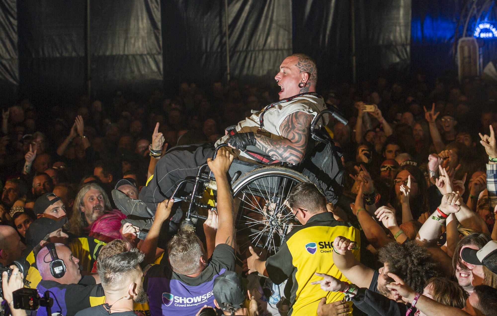

History & Culture of Metal
- History
The first heavy metal acts are considered to be Led Zeppelin, Black Sabbath and Deep Purple, often referred to as the “unholy trinity”. They are most often credited as the founders of the genre, but other bands, including Steppenwolf, are often thrown into the conversation, too. However, U.S. west coast band Blue Cheer actually recorded the first metal song, which was a January 1968 cover of “Summertime Blues.” The same month also saw the release of Steppenwolf’s debut album that included their signature track, “Born to be Wild.” Despite these being seen as early examples of metal music, it is accepted today that these were widely experimental, and it wasn’t until Led Zeppelin’s 1969 debut and the emergence of Black Sabbath and Deep Purple in 1970 as leaders in the genre that metal was truly born. The 70s saw metal shed its blues rock origins, with acts like Motorhead and Iron Maiden infusing elements of punk, and increasing tempos with more frantic drums. Despite so many influential acts coming out, metal was still being shunned by the music industry in favour of the punk movement, forcing smaller bands to release music without the support of a label. Metal began to branch out into sub-genres, with glam and hair metal acts like Motley Crue and Poison spearheading the movement. Thrash metal became huge, with bands such as Metallica and Megadeth reaching ever larger audiences, thanks in part to metal acts being played on MTV, which started airing in 1981.
- Culture
Fans of heavy metal music, commonly referred to as "Metalheads", have created
their
own subculture that encompasses more than just appreciation of the style of music. Fans
affirm
their
membership in the subculture or scene by attending metal concerts (an activity seen as
central
to
the subculture), buying albums, growing their hair long in most to (almost always) all cases
(although some metalheads do wear their hair short; one very famous example is late 70s to
80s-era
Rob Halford), wearing jackets or vests often made of denim and leather, adorned with band
patches
and often studs, and since the early 1980s, by contributing to metal publications.
The metal scene, like the rock scene in general, is associated with alcohol, tobacco and
drug
use,
as well as riding motorcycles and having many tattoos. While there are songs that celebrate
drinking, smoking, drug use, gambling, having tattoos and partying, there are also many
songs
that
warn about the dangers of those activities. The metal fan base was traditionally working
class,
white and male in the 1970s, and since the 1980s, more female fans have developed an
interest in
the style. Also, its popularity and interest in it has grown among African Americans and
other
groups recently.
The influence of popular entertainment on behavior continues to be debated. A
2006 study by the RAND Corporation, for example, found that 12- to 17-year-olds
who frequently listen to music with sexually degrading lyrics were almost twice as
likely to engage in sexual activities within the next two years as peers who rarely
or never listen to such songs. Many anecdotal accounts have also implicated
immoderate exposure to extreme heavy metal as contributing factors to acts of
criminal violence.
- Attire
Another aspect of heavy metal culture is its fashion. Like the metal music, these fashions have changed over the decades, while keeping some core elements. Typically, the heavy metal fashions of the late 1970s – 1980s comprised tight blue jeans or drill pants, motorcycle boots or hi-top sneakers and black T-shirts, worn with a sleeveless kutte of denim or leather emblazoned with woven patches and button pins from heavy metal bands. Sometimes, a denim vest, emblazoned with album art "knits" (cloth patches) would be worn over a long-sleeved leather jacket. As with other musical subcultures of the era, such as punks, this jacket and its emblems and logos helped the wearer to announce their interests. Metal fans often wear T-shirts with the emblem of bands. Around the mid-2000s, a renaissance of younger audiences became interested in 1980s metal, and the rise of newer bands embracing older fashion ideals led to a more 1980s-esque style of dress. Some of the new audience are young, urban hipsters who had "previously fetishized metal from a distance".
